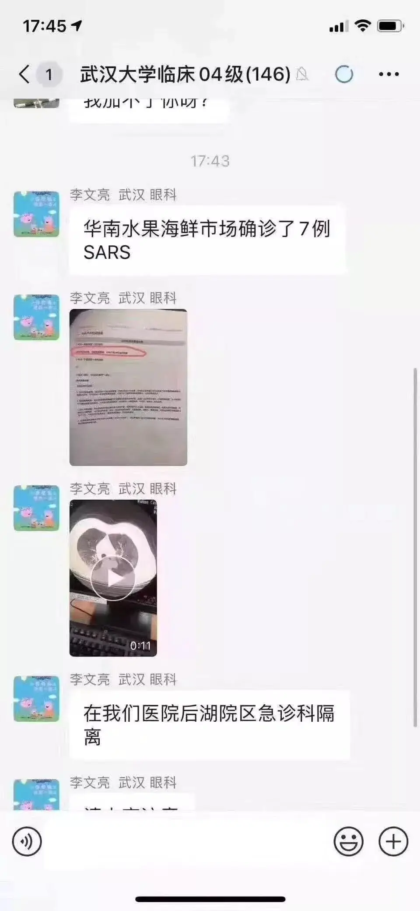
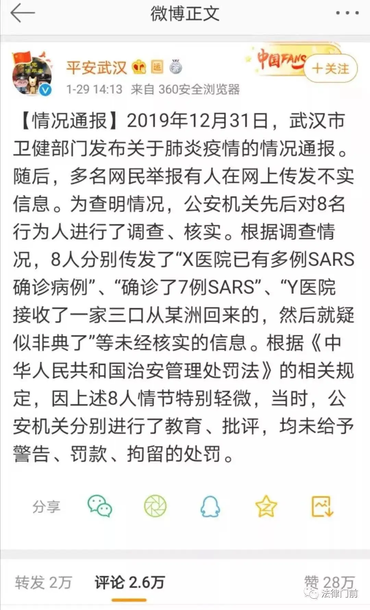
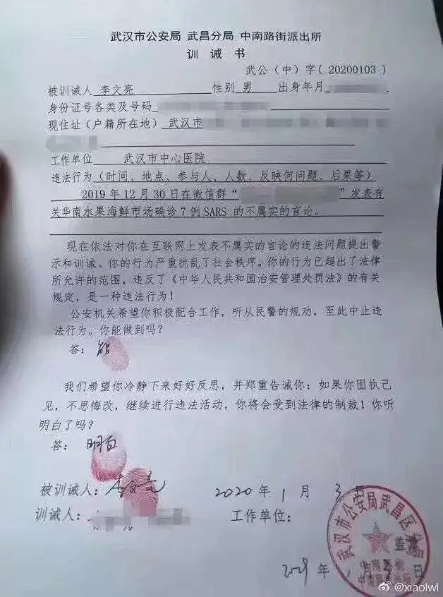
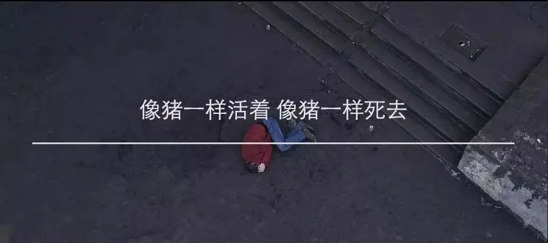

李文亮去世了，愚夫已死。
你想着拯救他们，他们却用28万个赞让你闭嘴！
李文亮，你是率先成熟的种子，所以死亡会率先扑向你。
楼倒不倒已经不重要了，重要的是人性的正义倒了。
李文亮先生，您走好。
从今以后，我不会再对那些精致的苟且者客气。
要么直接指出来，要么直接删微信。
不删不骂，那是在害人！

Крыши домов дрожат под тяжестью дней
屋顶在白日的重压下颤抖着
Небесный пастух пасет облака
飞天的牧童赶着云团
Город стреляет в ночь дробью огней
城市将一梭梭光射进黑夜
Но ночь сильней
夜却黑得如此深沉
ее власть велика
威力无边
Тем, кто ложится спать
那些躺下睡去的人
Спокойного сна
祝你们晚安
Спокойная ночь
夜是如此静寂
Тем, кто ложится спать
那些躺下睡去的人
Спокойного сна
祝你们晚安
Спокойная ночь
夜是如此静寂
Я ждал это время
我盼了这时辰许久
и вот это время пришло
它终于来了
Те, кто молчал
曾经缄默的人们
перестали молчать
不再沉默
Те, кому нечего ждать
那些无所顾忌的
садятся в седло
坐上鞍子
Их не догнать
追不上他们了
уже не догнать
已经无法追上
Тем, кто ложится спать
那些躺下睡去的人
Спокойного сна
祝你们晚安
Спокойная ночь
夜是如此静寂
Тем, кто ложится спать
那些躺下睡去的人
Спокойного сна
祝你们晚安
Спокойная ночь
夜是如此静寂
Соседи приходят
邻居们过来抱怨
им слышится стук копыт
说他们听见蹄声
Мешают уснуть
无法入睡
тревожат их сон
难以安眠
Те, кому нечего ждать
那些无所顾忌的
отправляются в путь
已经上路了
Те, кто спасен
他们得了救
те, кто спасен
得了救
Тем, кто ложится спать
那些躺下睡去的人
Спокойного сна
祝你们晚安
Спокойная ночь
夜是如此静寂
Тем, кто ложится спать
那些躺下睡去的人
Спокойного сна
祝你们晚安
Спокойная ночь
夜是如此静寂
-END-
推荐阅读
▼
（点击图片即可获取全文）

这里没有挑逗你眼目情欲的小鲜肉
也没有挑动你肉体情欲的段子
更没有膨胀你今生骄傲的鸡血
我们只在乎那些最质朴真诚的作品
在那里我们才能恢复真正的想象力
我们也坚信这才是我们真正需要的

ID:Six_hundred_hits
长按二维码，一键关注
【六百击】
电影评论
尽情分享朋友圈

微信二维码打赏通道